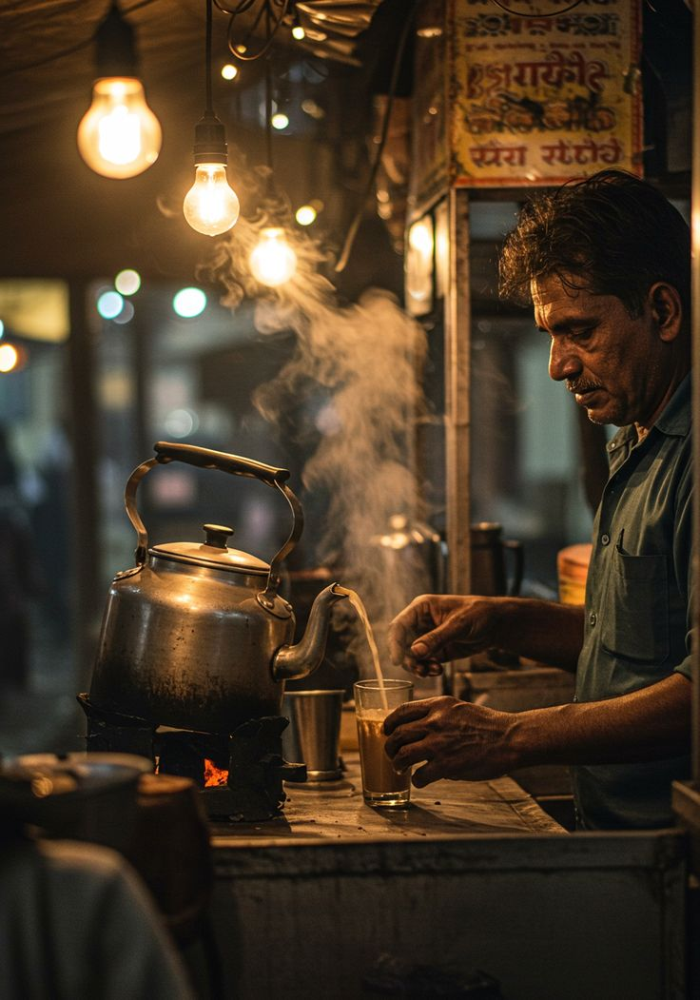

And somewhere between steam and silence, a glass of chaya waits.
Not just tea. Not just a stall. A ritual that begins when the lantern glows.
In Kerala, a chaya peedika is more than a tea stall. It is where nights slow down and conversations begin.
Auto drivers pause after long routes. College students gather after class. Workers rest under a dim lantern light.
A glass of chaya is passed across the counter — and for a few minutes, the world feels smaller, warmer, closer.

It begins with the whistle of a kettle. Steam curls into the night air.
Glass tumblers are arranged in a line. Strong tea is poured high and steady, mixing milk and sugar in a single smooth motion.
Parotta hits the hot pan. Oil crackles. Someone calls out an order.
This is not just cooking. It is rhythm. It is routine. It is the heartbeat of the night.
Tonight’s menu under lantern light.
Stories rise with every glass.
Moments captured after 9 PM.